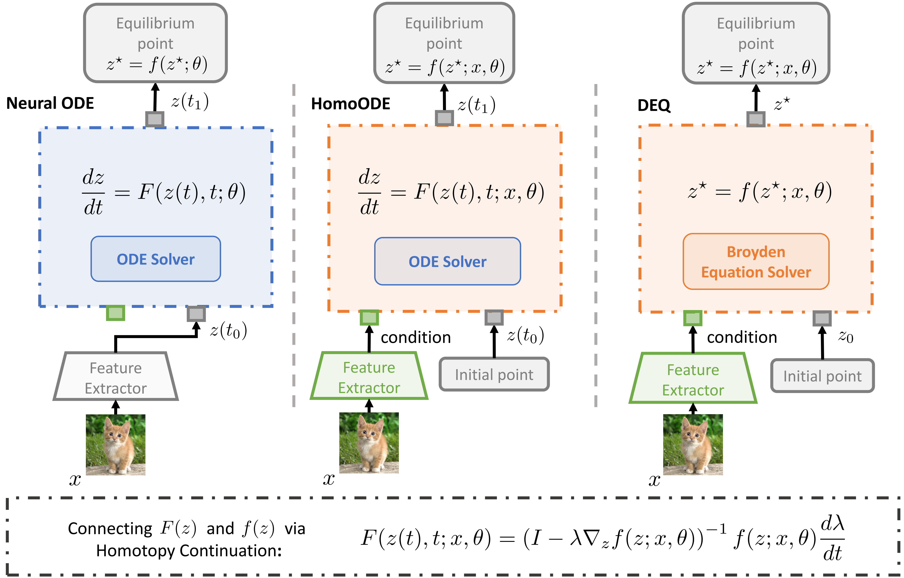

Deep Equilibrium Models (DEQs) and Neural Ordinary Differential Equations (Neural ODEs) are two branches of implicit models that have achieved remarkable success owing to their superior performance and low memory consumption. While both are implicit models, DEQs and Neural ODEs are derived from different mathematical formulations. Inspired by homotopy continuation, we establish a connection between these two models and illustrate that they are actually two sides of the same coin. Homotopy continuation is a classical method of solving nonlinear equations based on a corresponding ODE. Given this connection, we proposed a new implicit model called HomoODE that inherits the property of high accuracy from DEQs and the property of stability from Neural ODEs. Unlike DEQs, which explicitly solve an equilibrium-point-finding problem via Newton's methods in the forward pass, HomoODE solves the equilibrium-point-finding problem implicitly using a modified Neural ODE via homotopy continuation. Further, we developed an acceleration method for HomoODE with a shared learnable initial point. It is worth noting that our model also provides a better understanding of why Augmented Neural ODEs work as long as the augmented part is regarded as the equilibrium point to find. Comprehensive experiments with several image classification tasks demonstrate that HomoODE surpasses existing implicit models in terms of both accuracy and memory consumption.

Cite our work
If you find this work useful in your research, please consider citing:
@inproceedings{
ding2023two,
title={Two Sides of The Same Coin: Bridging Deep Equilibrium Models and Neural {ODE}s via Homotopy Continuation},
author={Shutong Ding and Tianyu Cui and Jingya Wang and Ye Shi},
booktitle={Thirty-seventh Conference on Neural Information Processing Systems},
year={2023},
url={https://openreview.net/forum?id=R2rJq5OHdr}
}